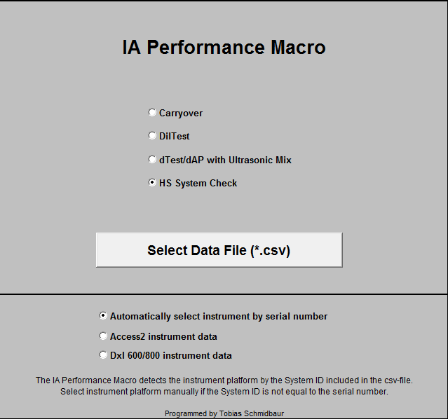

Using Performance Macro
Purpose
This document provides instructions for using the Performance Macro to evaluate diagnostic results.
Summary
The Performance Macro automatically processes instrument test results files and creates an output worksheet. The output worksheet displays a chart of the results with specifications and pass/fail indications when available.
The performance macro analyzes the test results from these procedures:
| Procedure | Link |
|---|---|
| Carryover | Tests: Pipettor Carryover |
| DilTest | Tests: Dilution Assay (DilTest) |
| HSFoamA2 and HSNoFmA2 System Check (HS System Check) | Tests: HSFoamA2 and HSNoFmA2 |
Saving Results
Perform these steps to archive diagnostic test data for analysis.
- In the user interface Main Menu, select .
- Choose or create a filter and date/time range that will display the desired data points.
- To select a group of results, select the first data point, hold down the [Shift] key, and then select the last result.
- Select
. Select A: Floppy drive or USB BACKUPDRIVE. Select
OK to save the selected data.
Caution: Sharing external USB memory between the DxI console PC and other systems can introduce a virus. See USB Drive Malware Scan and Removal for more information.
- Move the floppy disk or USB drive to the service laptop for analysis.
Analyzing Results
Perform these steps to analyze the results using the performance macro.
- Detach and save the performance macro to your PC Desktop.
- Open the performance macro file, and then select Enable Macros.
- Select the test from the macro test menu, and then select
Select Data File (*.csv).

- Enter the instrument serial number and substrate RLU, if prompted.
Note: Acceptance criteria for individual tests may be different between Access and DxI systems. The macro uses the serial number to identify which limits to apply. Instruments that have an instance number in the Serial Number field, require manual entry of the serial number.
- Locate the test result data file and open it.
Note: The macro processes the results within a few seconds. If the error This is not an XXX run occurs, then the csv file contains insufficient or incorrect data. The 16% CV is not a specification that impacts the Pass/Fail criteria and does not require troubleshooting.
- Remove the USB backup drive or floppy disk from the service laptop.